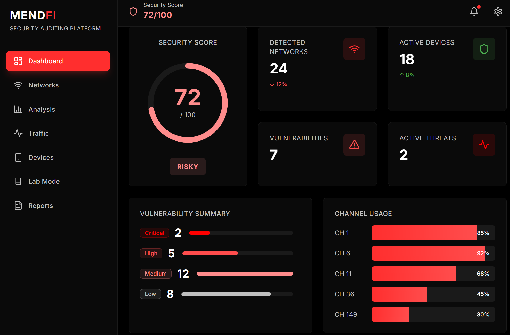
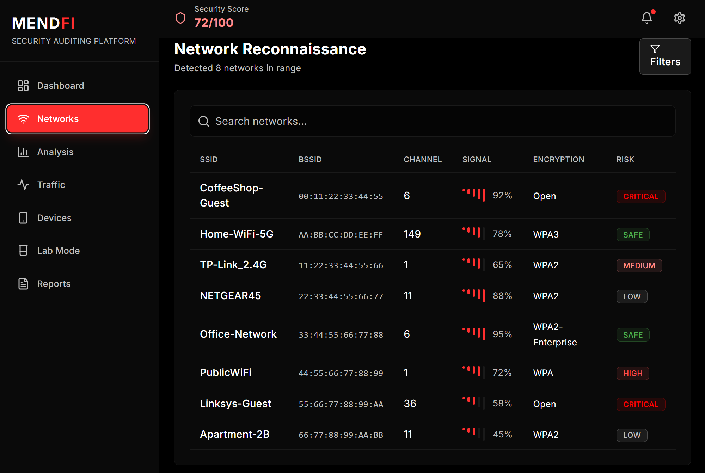
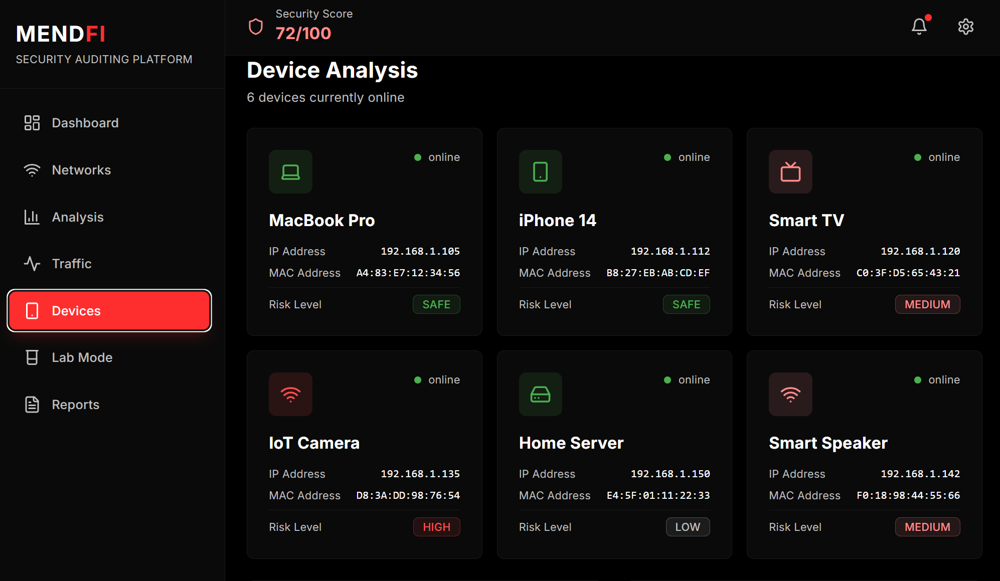
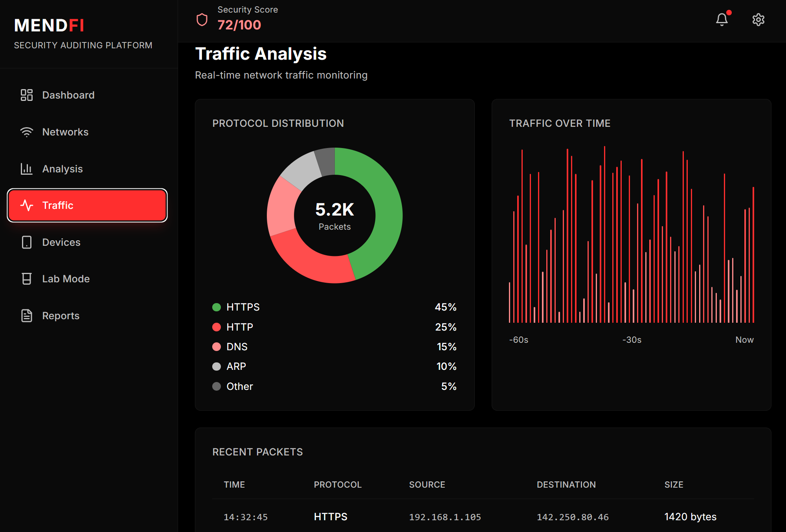
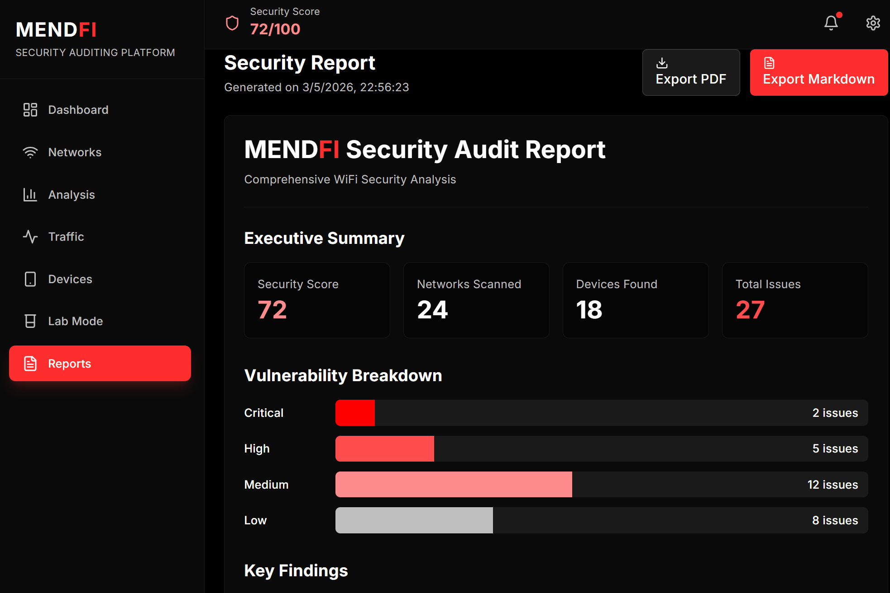

Network Scan
Detect nearby WiFi networks, surface encryption types, measure signal quality and give users immediate visibility into the wireless environment around them.
MendFi turns complex network visibility into a clean, actionable interface. Scan WiFi environments, identify connected devices, inspect traffic patterns, and surface risk indicators from one unified platform.

Weak configuration, suspicious services and multiple visible assets.
The landing page should not just look good — it should explain the product. These sections are built to show what MendFi does, how it works and why it matters.
Detect nearby WiFi networks, surface encryption types, measure signal quality and give users immediate visibility into the wireless environment around them.
Identify connected devices, infer vendor and type, and build a clearer picture of what is actually present on the network in real time.
Observe active traffic and protocol distribution to understand how the network behaves, where the activity is coming from and what deserves attention.
Turn technical observations into understandable findings with risk scoring, summaries and recommendations that make the output more actionable.
This block is built so you can plug in real screenshots from the application. Each tab can represent one core area of the product and explain what the user is looking at.




This helps the landing page feel more strategic. It stops being just a list of features and starts telling people who the product is for.
People who want to understand what is connected to their network, whether their setup looks exposed and which devices or services deserve review.
Users who need a clearer and faster way to inspect networks, devices and traffic without jumping between fragmented tools.
A product story can also target environments where structured insight, risk awareness and fast interpretation matter to non-specialist stakeholders.
Good landing pages reduce friction. This section explains the product in four steps: detect, inspect, analyze and act.
Discover nearby WiFi environments and gather the first layer of wireless visibility.
Enumerate devices and observe traffic behavior to understand the network more deeply.
Surface suspicious conditions, weak configurations and risk indicators in a readable way.
Use the findings and recommendations to prioritize what needs attention next.
If you want, this final section can point to a waitlist, GitHub repository, live demo, documentation or download page. Right now it is ready to work as the main conversion block for the landing.